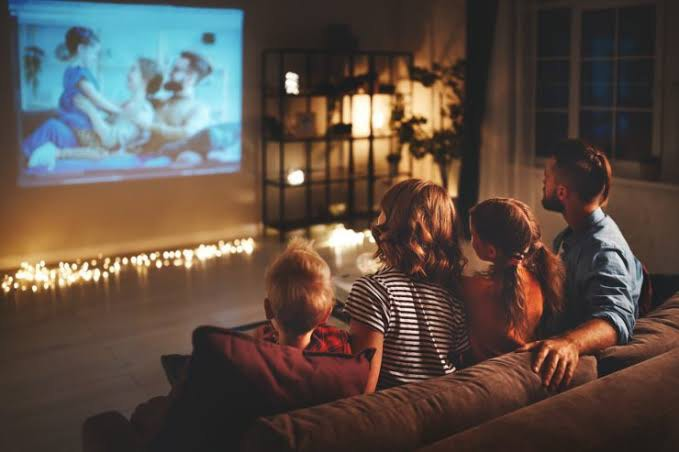
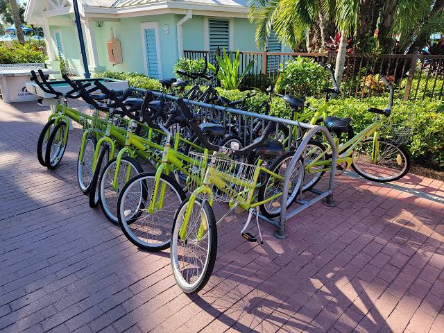

1. Yoga Classes

Yoga studios and teachers can be found in nearly every corner of the world today and it shouldn’t be hard for most hotel operators to find one to come engage with guests. Hoteliers can offer daily yoga or meditation classes in their hotels to encourage relaxation and improve the overall in-stay experience.
2. Spa Services

Spa services are a great way to provide a luxurious experience to guests while they are staying at a hotel property. Whether you have spa amenities on-site or not doesn’t really matter — any hotel can partner with local spa services and masseurs to provide special rates and discounts to their guests.
3. Movie Nights
Movie nights provide hoteliers with a dual opportunity to boost their bottom lines by offering premium snacks and beverages, and improve the overall guest experience at the same time.hotel with a lobby has the ability to hold a movie night activity — if you have a conference center, all the better — that attracts all kinds of travelers.
4. Local Tours

activity packages that include local tour experiences can be a win-win situation for both local tour guides and the hotels that provide them. The offering of tour packages and discounts is certain to attract guests that are looking to get out and about during their stay and help any type of hotel fill their rooms to capacity.
5. Bike Rentals
Especially if you’re in an urban or suburban area, low-cost bike rentals are a low-lift way for any hotel to impress guests and drive a little extra revenue. Depending on the environment surrounding the hotel, you may even want to consider offering multiple types of bikes — mountain, beach cruisers, BMX, electric — that will ensure guests have the best experience imaginable.
6. Live Music

Hoteliers may want to consider inviting a musician to play music at an open mic night in their lobby as a way to provide entertainment to guests at the property, as well as to draw in new customers. A musician in the lobby can create a more lively and inviting atmosphere, and can help to build a hotel's reputation.
7. Discounted Shopping Trips
Partnering with local businesses to offer discounted shopping opportunities can be beneficial for hoteliers for a few reasons. First, it gives hotel guests access to discounts that are not available anywhere else, thus providing an extra incentive for them to stay at the hotel. Second, it provides the hotel with an additional source of revenue.
8. Wine or Local Food Tasting

Some guests would prefer to explore the local area without ever leaving the grounds of a hotel. Local wine or food tastings organized on-property present a fantastic opportunity for hoteliers to engage their guests in a manner that’s most convenient to them.
9. Banana Boat and Zip lines

Make for an adventurous day! Zip-lining through lush landscapes and then cooling off with a thrilling ride on a banana boat across the water sounds like an exciting combination of activities. Where are you thinking of trying them out?